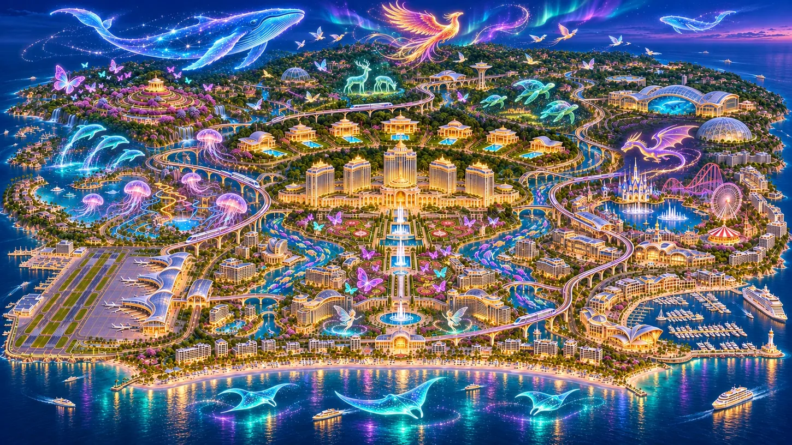
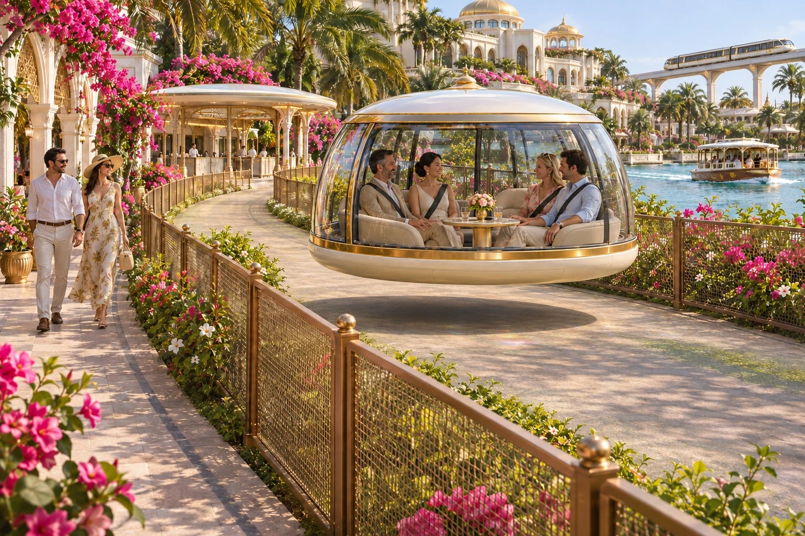

PERSONAL AI COMPANION
パーソナルAIホログラムペット
希望する方の旅に同行し、道案内や乗り換え、混雑情報、予定確認をサポート。撮影した写真や動画の整理にも使えます。

島の夜景イメージBUILT INTO THE ISLAND
開業までの初期投資25兆円のうち、15兆円は来島者向けの先端技術と、その基盤の整備に使われました。この金額は技術ごとの費用ではなく、開発・導入の総額です。
01 / ISLANDWIDE HOLOGRAMS
エデン島の立体映像は、投影・認識・通信・演算・電力を担う島内ネットワークで支えられています。街の演出、ホロアバター、客室の景観など、場所に応じて異なる見え方をつくります。
客室の窓に海底や星空が見える演出でも、窓や建物の物理構造は変わりません。このページでは投影装置の構造など、内部仕様は扱いません。
ホログラムの写真を見る →02 / GUEST AI
PERSONAL AI COMPANION
希望する方の旅に同行し、道案内や乗り換え、混雑情報、予定確認をサポート。撮影した写真や動画の整理にも使えます。
MULTILINGUAL CONCIERGE
24時間対応の案内窓口。翻訳、荷物、バリアフリー設備、子連れの旅行など、旅の途中で出てくる相談に対応します。
位置や映像などは、来島者が同意した範囲や設定に従って利用します。このウェブサイトでそうした情報を入力する必要はありません。
03 / OFFICIAL CAMERA
島の全自動撮影システムは、公開案内では「微粒子群方式」と説明しています。肉眼ではほぼ見えない微細な粒子の集まりを協調制御し、撮影位置や高さを選べる仕組みです。たとえば、全員がその場に立ったまま、少し高い角度から集合写真を撮れます。
これは島の公式カメラの説明で、ホログラム投影の原理とは別です。撮影・配信に使える場所や、映り込みへの配慮はガイドをご覧ください。
撮影・配信ガイドへ →
04 / MOVING THROUGH EDEN
エデン・スカイディスクは、専用ルートを走る短距離の磁気浮上式自動運転車両です。走行設備がホログラムで景色に溶け込むため、運河や庭園の上を滑るように見えます。
島内アクセスを見る →